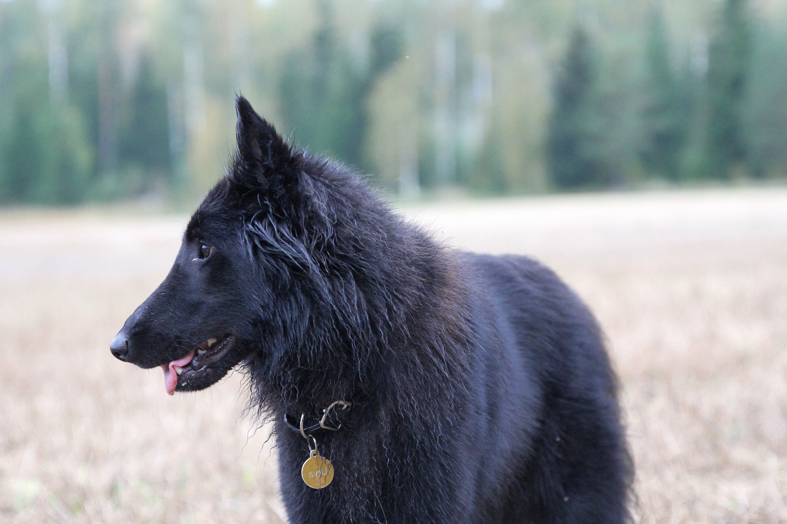
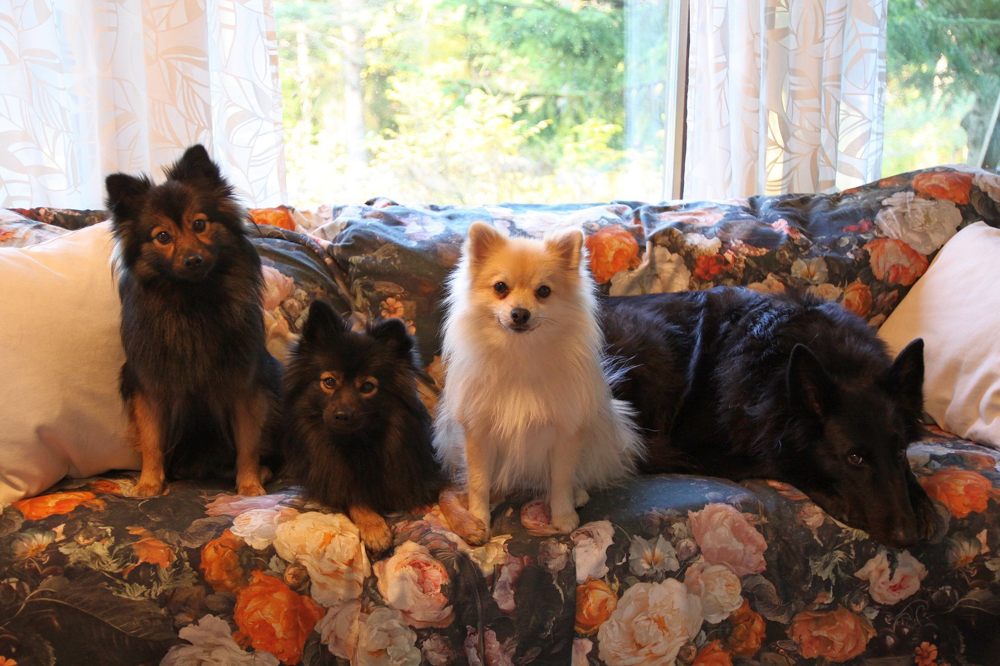
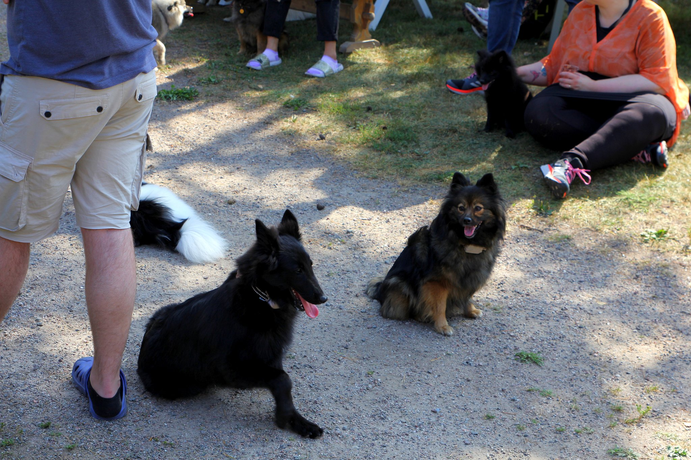

Rakkaudesta
koiriin ja
luontoon.
Rivigalin Kennel sijaitsee Inkoon rauhallisissa metsämaisemissa. Kasvatamme koiria rakkaudella, osana arkeamme ja perhettämme.

Keskellä Inkoon upeaa luontoa
Meidän Perhe
Koiramme kasvavat osana normaalia perhearkea, tottuen niin lapsiin, muihin eläimiin kuin kodin ääniinkin.

Kasvua Kodin Sydämessä
Pennut syntyvät ja kasvavat sisällä talossamme. Ne tottuvat varhain ihmisten läheisyyteen ja kodin arkisiin askareisiin, mikä luo vahvan pohjan rohkealle luonteelle.
Inkoon Metsät
Sijaintimme Inkoossa tarjoaa loputtomasti turvallisia metsäpolkuja ja puhdasta ilmaa nuuhkittavaksi. Luonto on meidän ja koiriemme toinen olohuone.
Tottuminen muuhun elämään
Meillä koirat eivät elä eristyksissä. Ne oppivat alusta asti tulemaan toimeen perheen muiden lemmikkien, laajan ystäväpiirimme ja lasten kanssa. Tavoitteenamme on kasvattaa tasapainoisia, iloisia ja rohkeita perheenjäseniä, jotka ovat valmiita uusiin seikkailuihin omissa kodeissaan.
